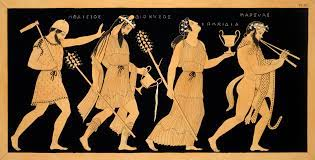
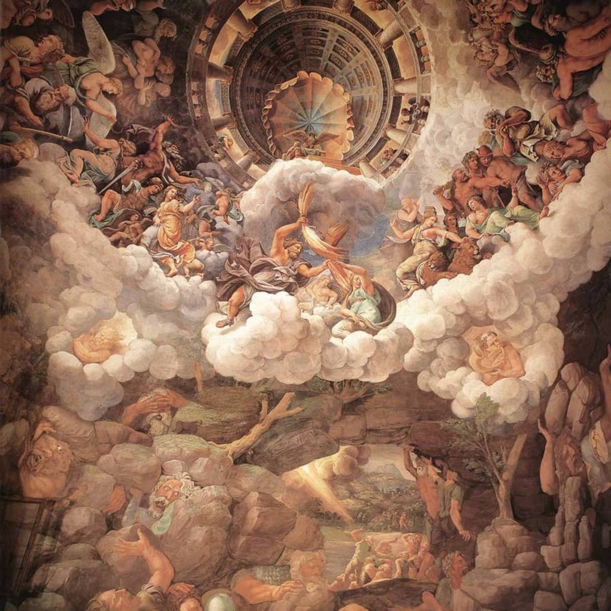
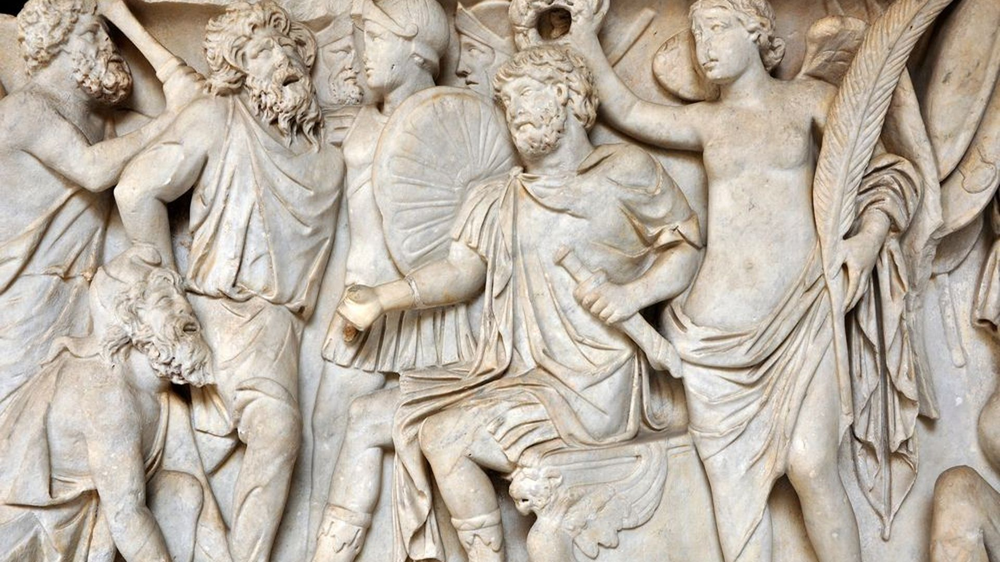
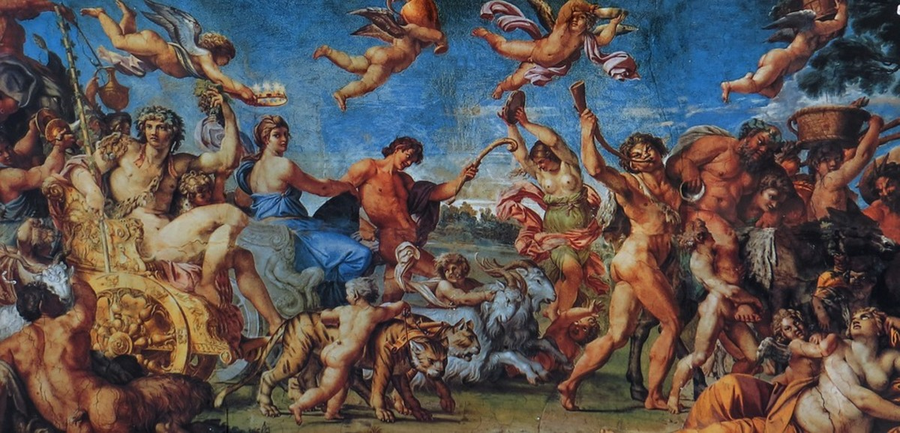
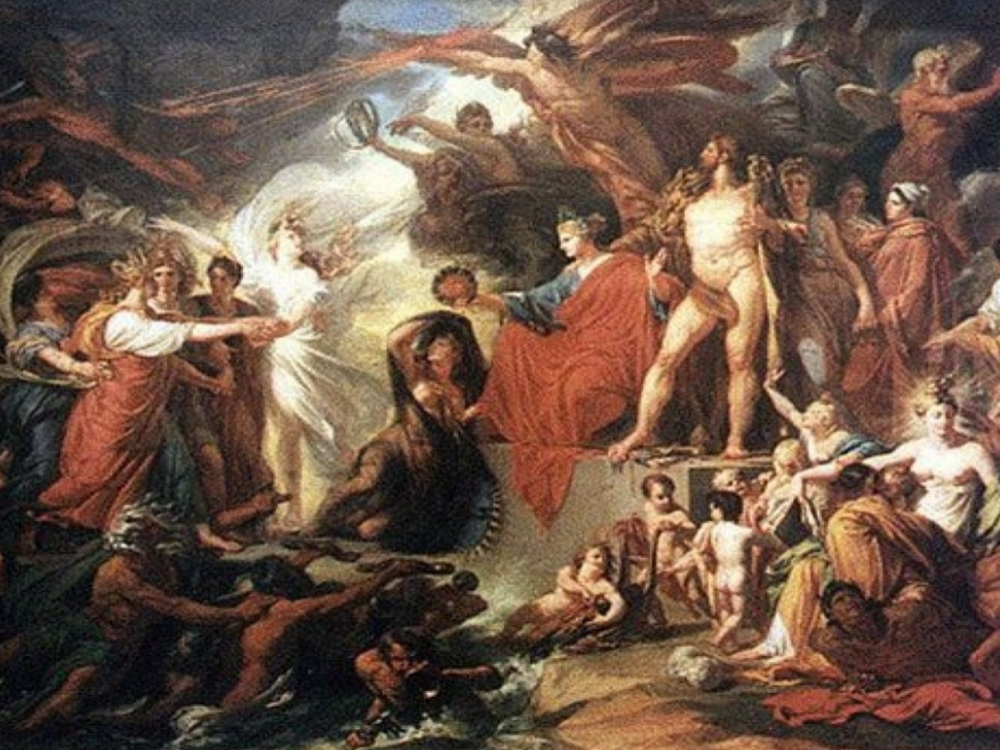

Greek Mythology
The Origin of Greek Mythology
In Greek mythology, there is no single original text like the Christian Bible or the Hindu Vedas that introduces all the myths’ characters and stories. Instead, the earliest Greek myths were part of an oral tradition that began in the Bronze Age, and their plots and themes unfolded gradually in the written literature of the archaic and classical periods. The poet Homer’s 8th-century BC epics the Iliad and the Odyssey, for example, tell the story of the (mythical) Trojan War as a divine conflict as well as a human one. They do not, however, bother to introduce the gods and goddesses who are their main characters, since readers and listeners would already have been familiar with them.

Around 700 BC, the poet Hesiod’s Theogony offered the first written cosmogony, or origin story, of Greek mythology. The Theogony tells the story of the universe’s journey from nothingness (Chaos, a primeval void) to being, and details an elaborate family tree of elements…(More information on The Primordial Greek Gods Page)

Later Greek writers and artists used and elaborated upon these sources in their own work. For instance, mythological figures and events appear in the 5th-century plays of Aeschylus, Sophocles and Euripides and the lyric poems of Pindar. Writers such as the 2nd-century BC Greek mythographer Apollodorus of Athens and the 1st-century BC Roman historian Gaius Julius Hyginus compiled the ancient myths and legends for contemporary audiences.

|
The Main Gods
The gods of the ancient Greek pantheon are divided into various categories on the following pages. The first of these--the Olympian gods, Titan gods, and primordial gods--represent the three generations of deities to rule the cosmos. The next five categories divide the gods by domain, namely the gods of sky, sea, earth (rustic and agrarian), and underworld. The final sections contain the daemones--minor deities or spirits representing abstract ideas, emotions and conditions--and apotheosed mortals.

The Primordial Greek Gods

The Titan Gods

The Olympian Gods
|
|